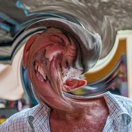

সোয়ার্ল

সেন্টারের চারপাশে লেয়ারকে ঘূর্ণিপাকের মতো মোচড়ায়, মাঝখানে সবচেয়ে জোরে আর রেডিয়াসে (লেয়ারের আকারের একটি অংশ) গিয়ে মিলিয়ে যায়। ঋণাত্মক স্ট্রেংথ উল্টো দিকে মোচড়ায়। মাপার ভিত্তি স্ক্রিন হলে রেডিয়াস স্ক্রিনের অংশ হিসেবে ধরা হয় এবং মোচড় মসৃণভাবে কমে আসে।
সোয়ার্ল একটি বিন্দুর চারপাশে লেয়ারকে ঘূর্ণাবর্তের মতো পেঁচিয়ে দেয়। সেন্টার হলো পেঁচানোর কেন্দ্রবিন্দু, স্ট্রেংথ কতটা পেঁচাবে (নেগেটিভ মান উল্টো দিকে পেঁচায়) এবং রেডিয়াস কেন্দ্র থেকে কত দূর পর্যন্ত প্রভাব বিস্তার করবে। স্পাইরাল ট্রানজিশনের জন্য স্ট্রেংথকে 0 থেকে অ্যানিমেট করুন।
সেটিংস
| সেটিং | ধরন | রেঞ্জ | ডিফল্ট |
|---|---|---|---|
| সেন্টার | পয়েন্ট (X, Y) | 0 থেকে 1 | 0.5, 0.5 |
| স্ট্রেংথ | সংখ্যা | -0.5 থেকে 0.5 | 0.1 |
| রেডিয়াস | সংখ্যা | 0 থেকে 3 | 0.3 |
| মাপার ভিত্তি | পছন্দ | লেয়ার, স্ক্রিন | লেয়ার |
| স্টাইল | পছন্দ | ক্লাসিক, স্ট্যান্ডার্ড | ক্লাসিক |